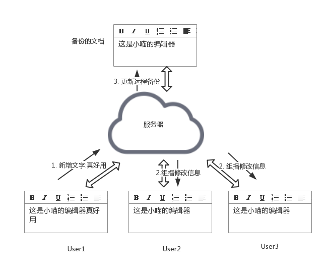
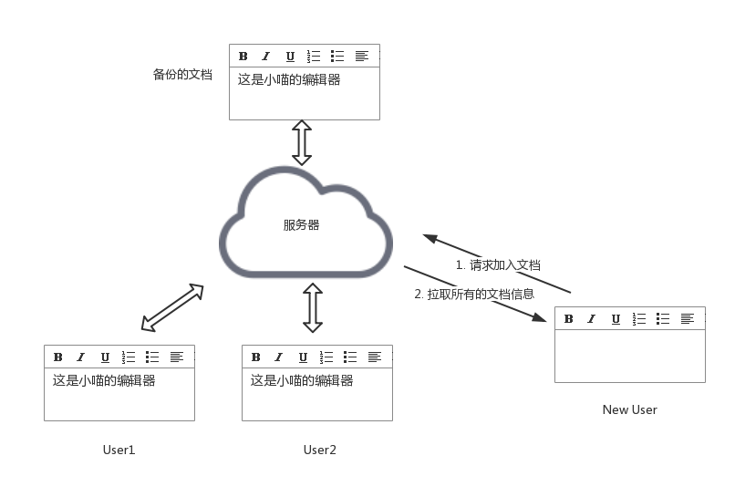

小喵的唠叨话：写这篇博客的初衷是因为看到了室友电脑面试的时候，面试官要求在线写代码。然后就想到，如果两个人能够在同一个页面进行编辑工作，不就能更方便的调试代码了吗？（PS.懂linux的screen或tmux的可以绕道了。）代码十分简单，在一个月前就写完了，只是一直没有时间写博客说明一下。
github：https://github.com/miaoerduo/shared-editor 欢迎 fork 和 star。
那么，实现一个这样的在线的共享编辑器需要哪些工作呢？我们下面一点一点的说明。
一、写在前面
熟悉Linux的同学都知道screen和tmux这两个工具。通常我们可以使用他们来执行一些长时间的任务，也可以使用他们的共享终端的功能。在结对编程中，这是很有效的一个工具。
本文要实现的，是和上述两个工具类似的共享编辑器。要说优点的话，可能就是更亲民一些，打开网页就能使用。很适合远程帮女票看个代码啥的（好像很多公司里面会截断websocket，这样就没法用了）。
实现一个这样的编辑器，主要有两个部分。编辑器和同步数据的服务端。下面我们依次介绍。
二、在线编辑器
首先，我们需要一个好看的编辑器。调研了一下，找到了ACE这个编辑器，网址是 https://ace.c9.io ，简单的了解了一下这个编辑器，发现居然连Github用的都是这个编辑器！看来我们选择这个编辑器是没错的啦。
使用起来也异常的简单，官方的Demo如下：
<!DOCTYPE html>
<html lang="en">
<head>
<title>ACE in Action</title>
<style type="text/css" media="screen">
#editor {
position: absolute;
top: 0;
right: 0;
bottom: 0;
left: 0;
}
</style>
</head>
<body>
<div id="editor">function foo(items) {
var x = "All this is syntax highlighted";
return x;
}</div>
<script src="/ace-builds/src-noconflict/ace.js" type="text/javascript" charset="utf-8"></script>
<script>
var editor = ace.edit("editor");
editor.setTheme("ace/theme/monokai");
editor.getSession().setMode("ace/mode/javascript");
</script>
</body>
</html>上面的script中的src可能需要换成可以访问的链接。之后就能预览到编辑器的效果。大致和前面小喵的效果类似。 具体的其他的用法可以在官网中查到，这里小喵就不着重介绍了。
三、消息同步机制
选择好合适的编辑器之后，我们需要做的就是消息通信的功能了。
这里主要有四种情况：
1. 文档同步
当用户修改文档的时候，其修改的部分必须同步到所有的阅读改文档的用户。这里只同步修改的部分，因为每次都同步整个文档，那么会很消耗带宽（总不能输入一个 "hello world"都同步十几次文档吧）。
下图是一个示例（强势安利一下：https://www.processon.com 这个画图的工具）。用户1编辑了文档，文档更新的内容发送给了服务器，服务器将更新的内容组播到所有打开相同文档的用户（注意，这里不是广播，广播是向所有的用户发送），同时更新自己的远程备份。

2. 文档副本
当用户第一次访问已经存在的文档的时候。这个时候，该用户需要加载页面的所有的内容。因此我们的服务器端需要存放完整的文档的副本。
如下图，用户3打开了这个文档，这时候会请求服务器发送完整的文档信息。

3. 文档销毁
小喵这里的文档的内容是直接在内存中保存的。这样的好处是很方便，不需要额外的控制数据库啥的。但是弊端也很明显，虽然每个文档可能比较小，但如果文档创建的比较多，就会一直消耗内存。所以当没有用户使用文档的时候，需要删除文档，这样服务器端就需要保存一个引用计数。计数为0，就删除文档。
4. 冲突解决
考虑到网络可能会出现故障，用户在编辑文档之后，其他的用户可能并没有即使同步，这样就出现文档落后的情况。一个简单的策略就是，每次文档修改之后都返回一个时间戳，下一次修改文档的时候要将这个时间戳作为参数发送到服务器，如果时间戳不是最新的，那么就刷新整个文档。当然这个策略也有很多的不足之处，如果大家能有什么改进，烦请告诉小喵一下~
上面就是设计部分，具体实现的话，需要用到WebSocket技术，这是浏览器和服务器实时通信的一个很好的工具。WebSocket有很多语言的实现，小喵这里选择的是比较容易上手的 socket.io。
socket.io 不仅支持用户和服务器的点对点通信，还支持组播、广播的操作。简单的学习一下，就可以完成上面的设计。
这里，小喵也不在代码层面上解释实现了。感兴趣的同学可以看看小喵的github: https://github.com/miaoerduo/shared-editor
能够给小喵提交一些PR的话就更好了。
四、写在后面
终于写完这篇博客了，拖了快两个月了。之前迟迟没有动手的一个原因是比较忙，更多的可能因为自己有点懒，一直不想画解释原理的示意图。现在终于写完了，还是挺开心的。
这次的博客相比之前的，更多的是介绍设计的思路。反正代码都在github上了，大家可以随意食用~ 希望能和大家一起进步！
转载 请注明出处，谢谢~